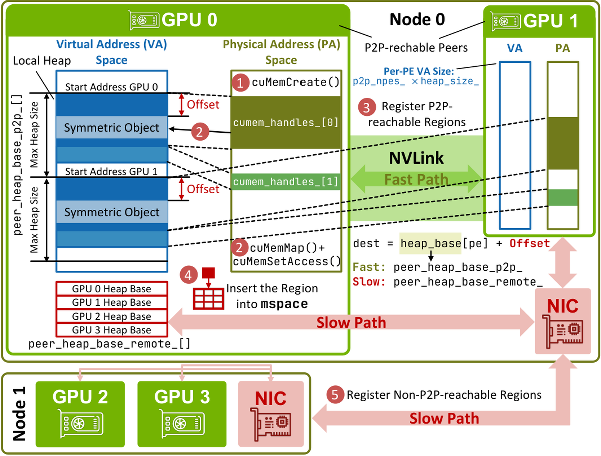
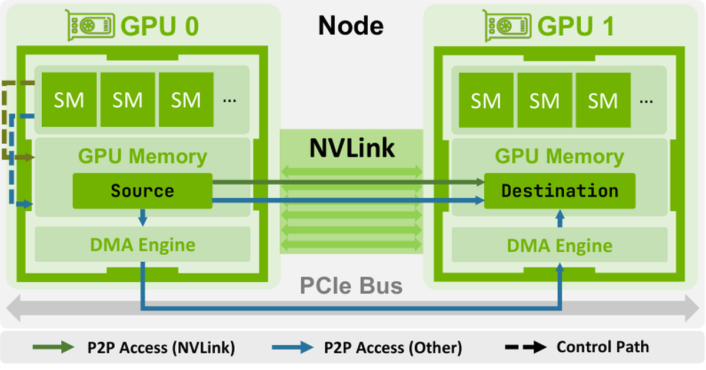
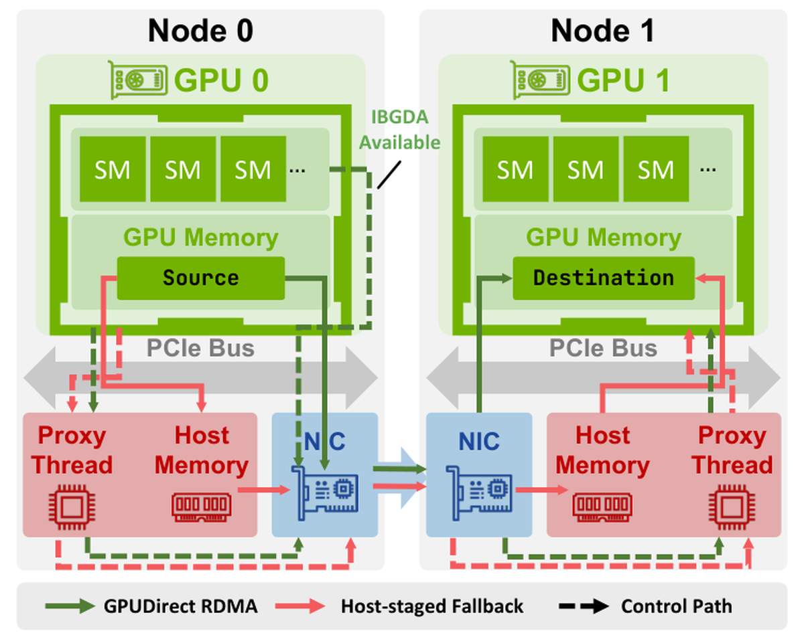
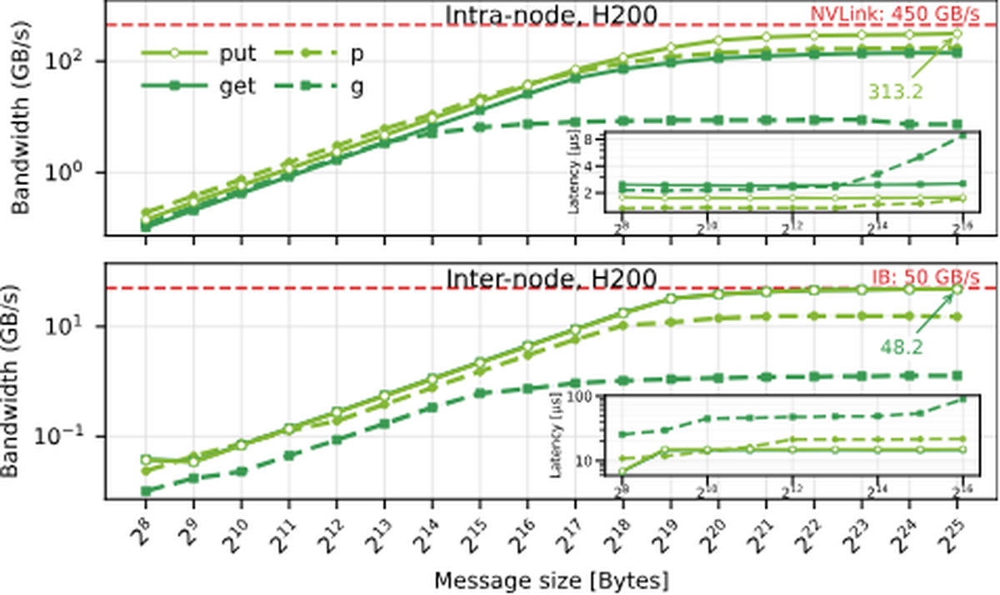
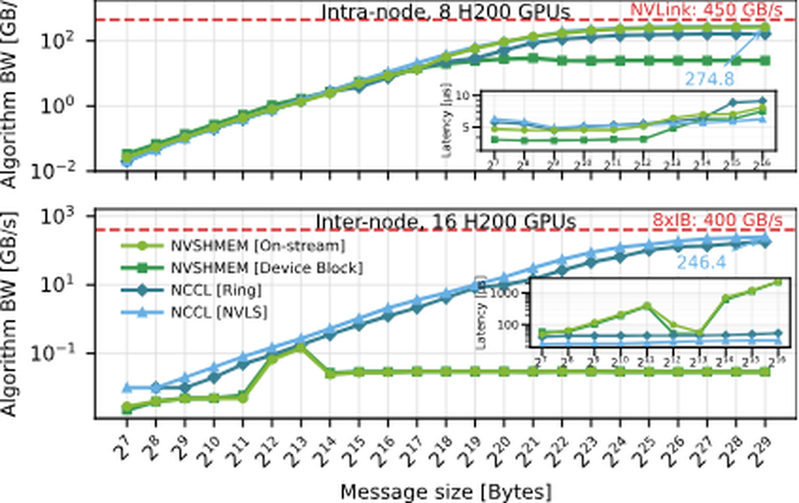
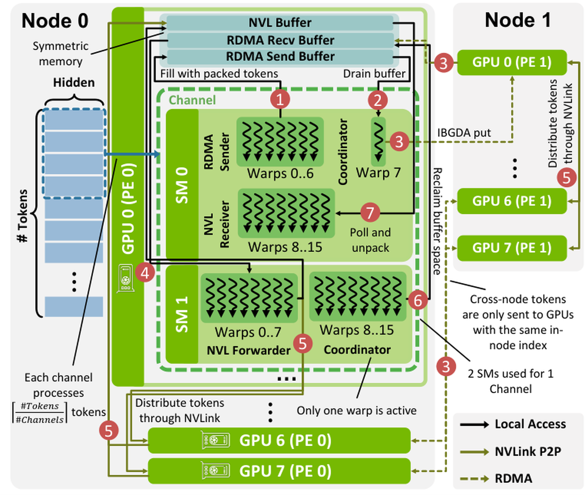

NVSHMEM是NVIDIA基于OpenSHMEM的PGAS通信库，面向GPU集群，通过对称内存在GPU代码里直接发起one-sided通信。尽管采用越来越广，但它的系统级设计一直散落在文档、源码和应用经验里。
这篇论文（新加坡-ETH中心FastTrackAI项目）给出NVSHMEM的简明系统级研究：编程模型、实现、性能特征，聚焦对称内存、one-sided操作、设备端collectives，并用DeepEP作为NVSHMEM在性能关键的稀疏深度学习负载中的案例。
核心结论：NVSHMEM开创了设备端对称内存编程模型，实现细粒度GPU驱动通信，对逼近硬件性能极限很重要。
分布式深度学习依赖数据/张量/流水线并行跨多GPU甚至多节点扩展训练与推理，HPC应用靠分布式分解扩展模拟。两者性能都取决于数据如何通过PCIe、NVLink、InfiniBand高效交换。NCCL是最广泛使用的方案，为多数CUDA框架（PyTorch、Megatron-LM、vLLM）提供优化的collective。

但NCCL最初是host驱动的：CPU入队collective，库选算法和调度。对bulk-synchronous collectives有效，却不适合细粒度point-to-point通信：比如通信依赖数据、限定在部分线程、或CPU协调导致不可接受延迟的模式。例子：stencil边界交换、不规则图通信、稀疏与expert-parallel负载、紧密耦合计算与数据搬运的自定义内核。
NVSHMEM用互补的编程模型填补这个缺口：把PGAS直接暴露给GPU代码，让CUDA kernel通过one-sided put/get、原子操作和显式同步访问远端PE的对称内存。它不是替代NCCL，而是支持host发起的collective难以表达的通信模式：不规则交换和细粒度重叠。
NVSHMEM成功后，NCCL通过新的device API吸收相关思想，加入设备发起操作和对称内存支持。但两者抽象不同：NVSHMEM提供扁平远程内存视图，NCCL明确区分scale-up和scale-out域。论文基于NVSHMEM 3.3.9源码级分析。
NVSHMEM的PE是一个映射到一张GPU的OS进程（2.4.1起支持每GPU多PE）。通信建立在对称内存上：每个PE有一个对称堆，对称对象在所有PE上以相同类型、大小、布局分配。这个结构让远端PE能通过put/get等one-sided操作访问对象，发起方指定源、目标、位置，不需要目标PE的显式receive。
这实现异步推进，很多情况下直接放置到目标的对称内存缓冲。OpenSHMEM/NVSHMEM通过把数据类型、传输大小、操作类型编码进API名，提供更轻量的调用路径；MPI RMA则把这些作为参数传入更通用的接口。SHMEM风格接口减少dispatch和参数处理开销，对细粒度通信有用。
与P2P内存访问、GPUDirect RDMA（GDRDMA）、GPUDirect Async Kernel-Initiated（GDA-KI）等概念相关：P2P让一张GPU直接访问另一张的内存；GDRDMA扩展到scale-out域；GDA-KI让GPU kernel无需CPU干预发起网络操作，InfiniBand GPUDirect Async（IBGDA）是其在InfiniBand的实现。
NVSHMEM保留一个足够覆盖所有P2P可达GPU对称堆的VA范围，把每个peer堆放在该范围的固定偏移处。这个组织是设计核心：它让远程地址能从堆相对偏移直接推导。
具体地：导出本地CUDA内存句柄、跨PE交换、把peer内存映射进对应的保留虚拟地址段。对非P2P传输，同一区域额外用相应网络接口注册。远程地址计算在快慢两条路径都遵循同一对称偏移规则，唯一区别是用哪个每-PE基地址、结果能否直接解引用。
快路径（P2P）中，远程地址 = peer堆映射基址 + (本地指针 - 本地堆基址)。即保留对象在本地堆的偏移，应用到远程堆基址。非P2P路径用远程基址，把算出的地址连同内存句柄、注册元数据或NIC key传给传输层。只有P2P情形给GPU一个可直接映射的peer虚拟地址，设备端快路径用它做SM发出的load/store。堆增长时NVSHMEM刷新设备驻留元数据，让GPU kernel观察更新后的布局。
NVSHMEM根据目标peer是否P2P可达选择快或慢路径。快路径由host侧P2P传输逻辑判定：验证两个PE在同一host、识别peer为本地可见CUDA设备、用cudaDeviceCanAccessPeer判断是否支持直接peer访问；若支持，再查能否启用原生GPU原子。

peer堆直接映射后，设备端RMA简化为对公式算出的远程地址做普通内存访问。标量操作如nvshmemi_p/g先检查目标PE是否有映射堆基址，然后对结果远程指针发直接store/load；批量接口如nvshmemi_put_threadgroup对该映射地址做整个threadgroup的memcpy。
Host端RMA用同一映射地址空间，但执行模型不同：host编排CUDA拷贝操作。公共API如nvshmem_put和nvshmemx_put_on_stream委托给nvshmemi_prepare_and_post_rma，peer堆本地可访问时选映射P2P路径，用cudaMemcpyAsync在本地与远程设备指针间拷贝。
目标PE的对称堆没有直接P2P映射进本地GPU地址空间时走慢路径：跨节点通信，以及非CUDA P2P可达的节点内peer。此时仍保留同样的基于偏移的寻址，但算出的远程地址不能再被本地GPU直接解引用，操作通过网络传输完成。

依赖系统支持，NVSHMEM要么用IBGDA（InfiniBand GPUDirect Async），要么走host代理路径：一个CPU线程代表GPU执行请求。慢路径RMA依赖可插拔的远程传输层：IBRC、IBDEVX等InfiniBand传输，以及UCX、libfabric等高层后端。InfiniBand传输通过Reliable Connection（RC）QP维护PE间连接，IBGDA额外支持Dynamic Connection（DC）QP。
设备端每个操作先查IBGDA是否可用：可用则卸载给nvshmemi_ibgda_rma_*，直接从GPU代码构造并投递RDMA工作到NIC；否则把操作编码成work request写进host-pinned内存的代理缓冲，一个专用host代理线程消费该描述符并执行对应操作。所以慢路径在API层仍是GPU发起的，但完成最终由NIC（IBGDA）或host代理（描述符队列）驱动。
Host端慢路径有限制：远程strided RMA和host端g操作不支持，put_signal只能通过on-stream代理路径。反映当前远程传输与代理机制主要为连续传输和设备端信号优化。
NVSHMEM的每个team拥有一个pSync缓冲（持久同步缓冲），是对称内存区域，用于跨PE协调collective及部分point-to-point操作。pSync区域跨team以strided方式布局，避免不同team的同步状态落在同一cache line；每个team的pSync内，不同collective用硬编码偏移分配固定子区域，部分操作双缓冲使连续调用交替使用缓冲、免去额外barrier。
为降低数据搬运后显式同步的成本（小消息的主要瓶颈），NVSHMEM实现LL和LL128协议（与NCCL类似）：把数据搬运和轻量到达通知耦合。LL协议中每个数据单元配同步标志：发送方把两个数据元素和两个标志打包进单个16字节原子写，接收方轮询标志判断数据就绪。LL128用更大传输单元，120字节数据 + 8字节标志 = 128字节，改善带宽利用；但LL128只在NVLink上安全，因为它依赖128字节原子store，PCIe等互连不保证。
NVSHMEM在运行时选collective算法：不是用显式分析模型，而是为每个collective实现基于规则的决策树。能力检查、数据类型与作用域约束、scratch空间可用性、固定消息大小阈值决定哪个算法被允许和优先，不支持的情况回退到更通用的实现。
设备端collective API是threadgroup collectives：提供thread/warp/block作用域入口，但单次collective调用由一个参与threadgroup执行，而非多个CTA。没有公开的 _grid变体是刻意设计：grid作用域操作需要kernel内跨CTA同步，比结束它并启动stream排序的通信kernel更贵。内置多CTA执行仅通过host端 _on_stream包装提供，且只对FCollect、AllReduce、ReduceScatter，由NVLS资源可用性门控。
测量在CoreWeave H200集群：每节点8张H200 SXM5（144GB HBM3e、NVLink-4、900GB/s双向），节点间ConnectX-7 IB。NVSHMEM 3.3.9 + CUDA 13.0.88。

节点内bulk put达313 GB/s，get峰141 GB/s。标量p达172 GB/s（大量GPU线程发独立远程store可缓冲重叠）；标量g低于9 GB/s：每次远程load线程需要返回值才能完成操作，限制未完成操作数、阻碍深流水线。这些结果低于450 GB/s NVLink参考，因NVSHMEM地址翻译、同步、工作划分和协议开销。
跨节点（tuned IBGDA）：bulk put/get各48.0/48.2 GB/s逼近单轨IB参考；标量p提升到15.6 GB/s，标量g仍低至1.28 GB/s。延迟：节点内bulk put/get约1.8-2.5μs、标量p/g 1.3-2.2μs；跨节点put/get约9.4-9.5μs（256B）到9.7μs（64KiB）。结论：NVSHMEM对bulk或聚合写风格RMA最有效，标量操作应作为延迟/控制原语，带宽敏感时批量处理。
AllReduce是NVSHMEM与NCCL都高度优化的操作。节点内，host端on-stream路径达264 GB/s算法带宽，超过强制NCCL ring基线、接近NCCL NVLS路径的276 GB/s；而设备端block作用域路径仅30 GB/s：因为它用单CTA。小消息上设备路径仍延迟有竞争力：到64KiB约3.8-7.1μs，对比NCCL ring 4.7-8.9μs、NCCL NVLS 5.6-5.9μs。

跨节点两者都低于0.20 GB/s，而NCCL ring达180 GB/s、NVLS Tree达252 GB/s。这符合预期：NVSHMEM的优化collective主要聚焦节点内或MNNVL域的NVLS算法。跨节点NVSHMEM没有小消息优势，64KiB时延迟涨到毫秒级，而NCCL保持数十微秒。多CTA执行对NVSHMEM collective性能至关重要。
DeepEP是DeepSeek为MoE负载（expert parallelism）发布的开源库。EP中每层专家跨GPU分片，每层token必须派发给router选中的专家，计算后输出合并回原token的GPU。两阶段都是稀疏all-to-all交换，通信量数据依赖，难以用现成collective高效实现。DeepEP用自定义dispatch/combine kernel，以NVSHMEM作为跨节点RDMA基板。

高吞吐（HT）路径面向训练：两阶段流水线：token先只在同local index的GPU间跨节点RDMA，再在目标节点内通过NVLink重分发到承载选中专家的GPU。HT用八个并行NVSHMEM world team（每节点GPU槽位一个），每个world每节点一个PE，所以跨节点RDMA只在同local index的GPU间发生：但假设每节点恰好8张P2P可达GPU，可移植性差。
dispatch kernel组织成逻辑channel，每个覆盖一对SM并处理一段连续输入token。SM内用warp specialization：RDMA侧7个warp作发送方、1个作协调者、8个作NVLink接收方（每本地GPU槽位一个）；配对SM上8个warp作RDMA到NVLink转发、其余作协调。发送warp把token放进对称NVSHMEM堆上的per-peer RDMA ring buffer，协调warp周期性地把写入批量成更大RDMA传输，用原子更新远端tail。
关键点：DeepEP不把大部分工作表达为NVSHMEM collectives或通用RMA调用，只在跨节点RDMA路径的关键点用它：notify_dispatch的元数据交换、协调者的分块RDMA put、远端头尾计数器的原子信用更新。NVSHMEM作为跨节点通信基板，DeepEP在它之上构建自己的多级传输流水线。
低延迟（LL）路径面向推理：batch小、端到端层延迟比峰值带宽更重要。它移除HT的节点内NVLink转发阶段，跨节点交付直接靠RDMA。不用八个独立world team，LL用单一全局NVSHMEM world team，并为跨节点的同槽位GPU叠加一个strided team。kernel结构更简单：无逻辑channel和warp specialization，单kernel grid处理整个dispatch，SM按local experts而非token范围划分；每个block内warp分成固定大小组，每组负责一个expert。
发送阶段每个warp遍历token处理一个top-k目标；FP8转换后lane 0为目标expert预留槽位并计算远端接收缓冲地址；目标在另一节点则用nvshmemi_ibgda_put_nbi_warp发打包消息，同节点P2P可达则直接拷贝进映射接收缓冲。接收阶段warp组等计数非零、读token数、为输出缓冲预留空间、拷贝消息并解包。关键路径NVSHMEM活动最少：LL路径用一次IBGDA put搬负载 + 一次原子更新通知最终计数。
NVIDIA已发布NCCL GIN与NVSHMEM在DeepEP上的直接对比：NCCL GIN与NVSHMEM匹配很接近（通常1-2% 内），同时提供NCCL运行时内的同类设备发起通信。这印证NVSHMEM仍作为低层one-sided RMA基板提供有意义的价值，对需要细粒度one-sided通信和直接设备端控制的应用依然相关。
参考：https://arxiv.org/abs/2606.05951